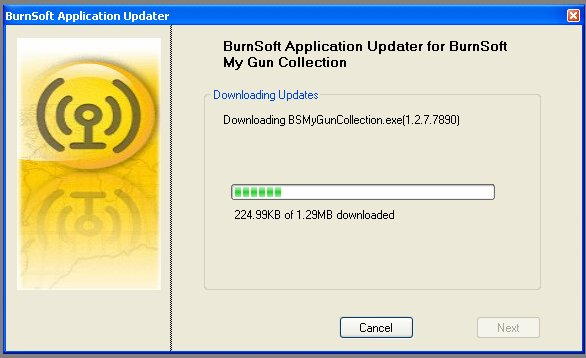
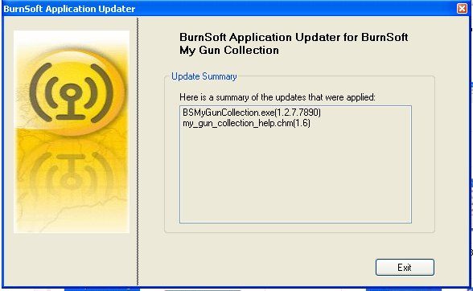

When you click on the Update Option in the application or on the Update Icon ( )
in the program directory it will bring up the following screen:
Right now it is tell you the application that it is going to check for updates and the
current version that you are running at.
Before you click on the Next Button, Make sure the
radio button near "File Source" is selected.
.
Now to select the location on where the update files are located, click on the button with the 3 dots on it to browse your computer.
Select the Path using the browser, once you have located the path on were the update
files are located at, click on the OK button
If there are no updates for your application it will give you the following message:
If you do not get this message, proceed to step 6
It looks like you have an update!
Click on the "Next" button to continue and
download the updates.
Once you click on "Next" it will
download the updates for your application: Wait Until you get the "Downloads
Complete" message before going to the next step.

Here is an update on what was downloaded, once you finish looking over the summary,
click on the Exit Button to exit the program.
